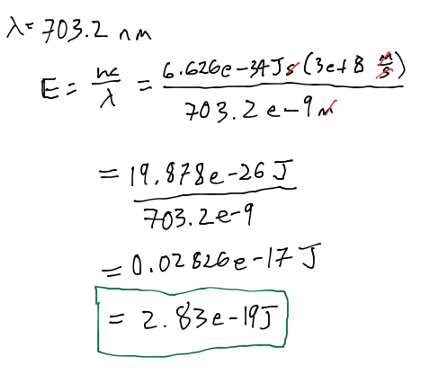
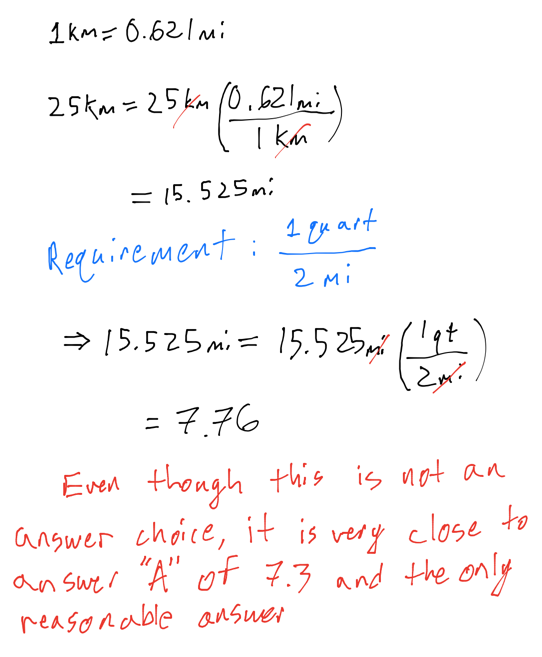
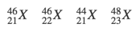

Test 1 - Review / Answers
Questions
- Calculate the energy of the red light emitted by a neon atom with a wavelength of 703.2 nm.
- 3.54 * 10^-19 J
- 4.27 * 10^-19 J
- 2.34 * 10^-19 J
- 6.45 * 10^-19 J
- 2.83 * 10^-19 J

- Because of the high heat and low humidity in the summer in Death Valley, California, a visitor requires about one quart of water for every two miles traveled on foot. Calculate the approximate number of liters required for a person to walk 25 kilometers in Death Valley
- 7.3 L
- 295 L
- 76 L
- 117 L

- What decimal power does the abbreviation p represent
- 1 * 10^6
- 1 * 10^9
- 1 * 10^-1
- 1 * 10^-12
- 1 * 10^-15
- Which of the following represent isotopes:
- 
- 2.5 g
- 6.0 * 10^2
- 1.0 * 10^-2
- 2.4 * 10^2
- 1.0 * 10^2
- Meter is a measure of
- length
- temperature
- mass
- time
- volume
- What species is represented by the following information?
- p+ = 12, n° = 14, e- = 10
- Si^4+
- Mg
- Ne
- Si
- Mg^2+
- How many significant figures are there in the answer for the following problem?
- 34.2 + 0.6699 + 18?
- one
- two
- three
- four
- How many atoms of oxygen are in 2.50 moles of SO_2?
- 4.52 * 10^24
- 1.51 * 10^24
- 5.02 * 10^23
- 3.01 * 10^24
- 7.53 * 10^23
- Determine the velocity of a marble (m = 7.75 g) with a wavelength of 3.46 * 10^-33 m
- 40.5 m/s
- 2.47 m/s
- 24.7 m/s
- 38.8 m/s
- 52.9 m/s
- Calculate the mass (in g) of 2.0 * 10^24 atoms of Hg
- 3.9 * 10^2 g
- 2.4 * 10^2 g
- 3.2 * 10^2 g
- 1.5 * 10^2 g
- 6.5 * 10^2 g
- Determine the mass of an object that has a volume of 88.6 mL and a density of 7.77 g/mL.
- 96.4 g
- 0.0877 g
- 11.4 g
- 80.8 g
- 688 g
- What species is represented by the following information?
- p+ = 47, n° = 62, e- = 46
- Ag+
- Nd
- Pd
- Ag
- Pd+
- A wooden baseball bat is an example of
- a compound
- an element
- a heterogeneous mixture
- a homogeneous mixture
- An atom of 32 P contains _ electrons
- 32
- 47
- 17
- 27
- 15
- Which of the following is an example of the law of multiple proportions?
- A sample of chlorine is found to contain three times as much Cl-35 as Cl-37
- Two different compounds formed from carbon and oxygen have the following mass ratios: 1.33 g O: 1 g C and 2.66 g O: 1 g C.
- Two different samples of table salt are found to have the same ratio of sodium to chlorine.
- The atomic mass of bromine is found to be 79.90 amu
- Nitrogen dioxide always has a mass ratio of 2.28 g O: 1 g N
- The mass of a single arsenic atom is 1.244 * 10^-22 g. This is the same mass as
- 1.244 * 10^-16 mg
- 1.244 * 10^-25 kg
- 1.244 * 10^-28 μg
- 1.244 * 10^-31 ng
- Electromagnetic radiation with a wavelength of 640 nm appears as orange light to the human eye. The frequency of this light is _ s^-1.
- 4.688 * 10^14
- 4.688 * 10^5
- 1.920 * 10^2
- 1.920 * 10^11
- 2.133 * 10^-15
- How much energy (in kJ) do 3.0 moles of photons, all with wavelength of 675 nm, contain?
- 177 kJ
- 354 kJ
- 418 kJ
- 532 kJ
- 238 kJ
- The density of air under ordinary conditions at 25°C is 1.19 g/L. How many kilograms of air are in a room that measures 10.0 ft x 11.0 ft and has an 10.0 ft ceiling? 1 in = 2.54cm; 1 L = 10^3 cm^3
- 3.32
- 0.138
- 3.71 * 10^4
- 0.0795
- 37.1
- Which of the following are examples of extensive properties?
- volume
- color
- density
- temperature
- solubility
- Gallium has an atomic mass of 69.723 amu. The Ga-69 (68.926 amu) is 60.111%. What is the amu of the other isotope?
- 70.924 amu
- 70.932 amu
- 70.928 amu
- 70.928 amu